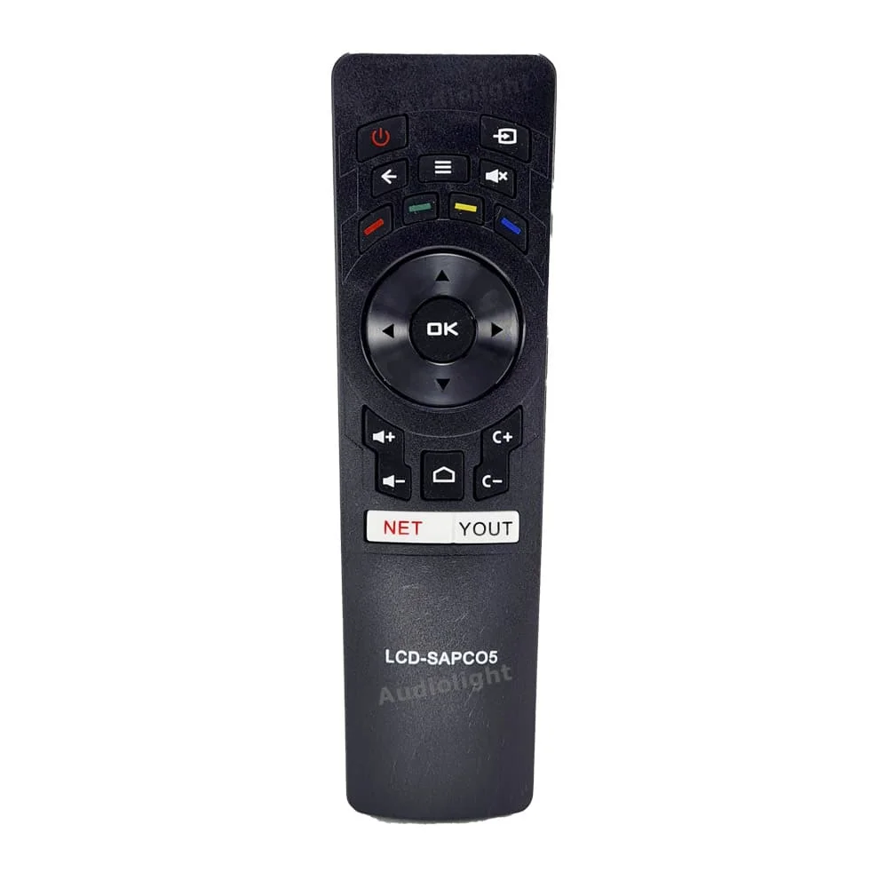
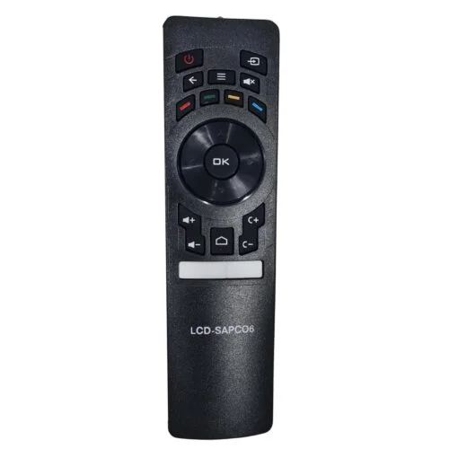

EN CASO DE POSEER UNO DE LOS CONTROLES DE LA IZQUIERDA, SE LO PUEDE REEMPLAZAR
POR CUALQUIER CONTROL DE LA DERECHA, PERO NO SIEMPRE ES RECOMENDABLE CAMBIARLO POR EL MISMO CONTROL, YA QUE AUNQUE
EL FORMATO PAREZCA EL MISMO, NO SIEMPRE FUNCIONAN ENTRE SI. SIN EMBARGO, LOS CONTROLES DE LA DERECHA, FUNCIONAN SIN PROBLEMA
CON LOS QUE APARECEN A LA IZQUIERDA SIN IMPORTAR CUAL.

784

1174
NOHIS
711
ACTUALIZACION:
Si tenes un televisor noblex que empiece con las letras DJ, podes usar el control chico que se identifica con el modelo SAPCO6.
Caso tu modelo de televisor empiece con las letras DI, se debe buscar el control con el modelo SAPCO5.
Esto no reemplaza lo anterior mencionado, es simplemente para seguir aportando un poco mas del tema
CASOS PARTICULAR DE COMPATIBILIDAD(LOS 3 PROXIMOS, HASTA LG)
LOS CONTROLES DEBAJO DE ESTE TEXTO HACEN USO DE LAS FUNCIONES BASICAS (COMO ENCENDIDO, SUBIR Y BAJAR VOLUMEN Y SUBIR Y BAJAR CANALES, BOTON SOPURCE), PERO NO DEL RESTO DE LAS FUNCIONES.
ES DECIR QUE SE PUEDEN USAR COMO UN REEMPLAZO BASICO, PERO NO COMPLETO